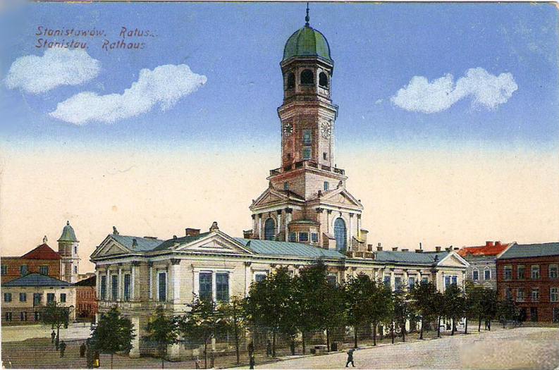

establishment 1662
заснування
The city Stanisławów (Ivano-Frankivsk nowadays) was erected by polish nobleman Stanisław Rewera Potocki in 1662 as a fortress to protect the Polish-Lithuanian Commonwealth from Tatar invasions. It was built out of a fort that was erected next to the villages of Zabolotiv (1435) and Knyahynyn (1449).The village of Zabolotiv and the land around it were purchased by Stanisław Rewera Potocki from another Polish nobleman Rzeczkowski. The city was named "Stanisławów" by Polish nobleman Andrzej Potocki commemorating his father, his first-born son Stanisław Potocki or Saint Stanislaus.
Місто Станіславів (сьогодні Івано-Франківськ) було збудовано польським шляхтичем Станіславом Реверою Потоцьким у 1662 році як фортеця для захисту Речі Посполитої від татарських набігів. Воно було розбудовано з форту, який був зведений поруч із селами Заболотів (1435 р.) та Княгинин (1449 р.). Село Заболотів та землю навколо нього придбав Станіслав Ревера Потоцький у іншого польського шляхтича Жечковського. Місто було названо «Станіславів» польським шляхтичем Анджеєм Потоцьким на честь свого батька, свого первістка Станіслава Потоцького або святого Станіслава.

Stanisław Rewera Potocki
Станіслав Ревера Потоцький
.png)
Andrzej Potocki
Анджей Потоцький
11.png)
Stanisław Potocki
Станіслав Потоцький
Andrzej Potocki issued the declaration establishing the city of Stanisławów with Magdeburg rights on May 7, 1662. The Magdeburg rights allowed the local population to organize a city government, city council, city court and create various craftsman shops and independent craftsmen guilds. So, a city market was created. Magdeburg rights also guaranteed the freedom of religion to all the citizens.
Анджей Потоцький видав декларацію про надання місту Станіславову Магдебурзького права 7 травня 1662 р. Магдебурзьке право дозволяло місцевому населенню організувати міську владу, міську раду, міський суд і створювати різноманітні ремісничі цехи та самостійні ремісничі гільдії. Так виник міський ринок. Магдебурзьке право також гарантувало свободу віросповідання всім громадянам.
The first architect of the Stanisławow fortress was Francisco Corasini from Avignon. The fortress was constructed in 1661-1662 in a form of hexagon surrounding Potocki palace. It had bastions, redoubts, fortification and two main gates known as Halytska gate (Halych City direction) and Tysmenytska gate (Tysmenytsia City direction). There was one more smaller gate known as Armenian or Zabolocka.
Першим архітектором Станіславівської фортеці був Франциско Корасіні з Авіньйону. Фортеця була побудована в 1661-1662 роках у формі шестикутника, що оточує палац Потоцьких. Воно мало бастіони, редути, укріплення та дві головні брами, відомі як Галицька брама (у напрямку міста Галич) та Тисменицька брама (у напрямку міста Тисмениця). Була ще одна менша брама, відома як Вірменська або Заболотська.
On September 17, 1662 Andrzej Potocki awarded the Jewish community of the city the right of self-government, which included permission to build their own schools, community buildings, and others. On May 23, 1663 the Armenian community of the city was allowed to build its own church as well, which was finished in 1665. Also in 1663 monks of Trinitarian Order from Warsaw arrived in Stanisławów. On April 24, 1664 the newly created city's Butchers Guild was awarded the "20-year freedom" exception from taxation. The City's Ratusz was finished in 1666.
17 вересня 1662 року Анджей Потоцький надав єврейській громаді міста право самоврядування, яке включало дозвіл на будівництво власних шкіл, громадських будівель тощо. 23 травня 1663 року вірменській громаді міста також було дозволено побудувати власну церкву, яка була закінчена в 1665 році. Того ж 1663 року до Станіславова прибули монахи Ордену Тринітаріїв з Варшави. 24 квітня 1664 року новостворена міська Гільдія М'ясників отримала «20-річну свободу» звільнення від оподаткування. Міська Ратуша була закінчена в 1666 році.
By 1672 the fortress was restructured out of wood into brick. In 1672-1682 a new large fortified Potocki palace was built in the place of wooden one. Jews were granted the right to become permanent residents in 1672. The City's first Town Hall called "Ratusha" was erected and built out of wood in 1666. Stanisławow became the stronghold against Ottoman Empire forces in 17th century. It was attacked and besieged in early September 1676, but was not captured. Stanisławow fortifications were badly damaged after the Ottomans attacks and in 1677 the Sejm in Warsaw relieved the city of its tax duties. On September 12, 1683, Stanisław, the oldest son of the city founder, perished in battle against the Turks near Vienna. His body was transferred to his native city and buried in the Potocki family parish kosciol also known as Fara (Nowadays the Art Museum on Sheptytsky Square).
До 1672 року фортеця була перебудована з дерев'яної на цегляну. У 1672-1682 рр. на місці дерев'яного палацу Потоцьких збудовано новий великий укріплений палац. Євреї отримали право стати постійними жителями в 1672 році. Першу міську Ратушу було зведено і побудовано з дерева в 1666 році. Станіславів став опорним пунктом проти військ Османської імперії в 17 столітті. На початку вересня 1676 року він був атакований і взятий в облогу, але не був захоплений. Станіславівські укріплення були сильно пошкоджені після османських нападів, і в 1677 році сейм у Варшаві звільнив місто від податкових зборів. 12 вересня 1683 року під Віднем у битві проти турків загинув старший син засновника міста Станіслав. Його тіло перевезли до рідного міста і поховали в родинному парафіяльному костелі Потоцьких, також відомому як Фара (нині Художній музей на площі Шептицького).

Old City reconstruction
Реконструкція старого міста
The city was split into six small districts: midtown, where lived rich catholic population and patricians, pidzamche (subcastle), and four suburbs - Zabolotiv, Tysmenytia, Lysets, and Halych where members of the lower social classes lived. The Jews were assigned a specific "Street of the Jews" near the river, where they were allowed to live. By 1672 a wooden synagogue had been built.
Місто поділялося на шість малих районів: середмістя, де проживало багате католицьке населення та патриціат, підзамче та чотири передмістя – Заболотів, Тисмениця, Лисець і Галич, де проживали представники нижчих станів. Євреям була призначена конкретна «Вулиця євреїв» біля річки, де їм дозволялося жити. До 1672 року була побудована дерев'яна синагога.
18-19th Century
18-19 століття
According to the 1709 census in the fortified midtown lived 62 Ruthenian families, 50 Armenian, 25 Jewish, and 9 Polish.
Due to numerous military conflicts, diseases, and other socially dangerous events, the population of Stanisławow by the end of the 18th century did not exceed 5,000.
Among such events was the invasion of the city by the Russian forces in course of the Great Northern War in 1706 that robbed the city in the revenge for Józef Potocki's switching the sides in the support of Stanisław Leszczyński. Stanisław I Leszczyński (1677 – 1766) was a King of Poland, Grand Duke of Lithuania, Duke of Lorraine and a count of the Holy Roman Empire. Józef Potocki (1673–1751) was a Polish nobleman, magnate, Great Hetman of the Crown. Józef was considered as the richest magnate in Poland at that time. In 1712 Stanisławow was robbed again during some inter-magnate conflicts when it was invaded by the forces of Polish Hetman Sieniawski. Adam Mikołaj Sieniawski (1666–1726) was a Polish nobleman, aristocrat and military leader. In 1710 a quarter of the city population died of typhus.
За переписом 1709 р. в укріпленому середмісті проживало 62 русинські родини, 50 вірменських, 25 єврейських і 9 польських. Через численні військові конфлікти, хвороби та інші суспільно небезпечні явища, населення Станіславова до кінця XVIII століття не перевищувало 5 000 осіб. Серед таких подій було вторгнення до міста російських військ під час Великої Північної війни в 1706 році, які пограбували місто в помсту за те, що Юзеф Потоцький перейшов на бік Станіслава Лещинського. Станіслав I Лещинський (1677–1766) — король Польщі, великий князь литовський, герцог Лотарингії та граф Священної Римської імперії. Потоцький Юзеф (1673–1751) — польський шляхтич, магнат, великий гетьман коронний. Юзеф вважався найбагатшим магнатом тогочасної Польщі. У 1712 році Станіславів знову був пограбований під час міжмагнатських конфліктів, коли в нього вторглися війська польського гетьмана Сенявського. Адам Миколай Сенявський (1666–1726) — польський шляхтич, аристократ і полководець. У 1710 р. чверть населення міста померла від тифу.

Józef Potocki
Юзеф Потоцький

Stanisław I Leszczyński
Станіслав І Лещинський

Adam Sieniawski
Адам Сенявський
The streets in the city were paved in cobbles around 1695. In 1728 the Akademia Stanislawowa was converted into Jesuit Collegium for which a separate building was erected in 1733–1743. In 1729 the Jesuit Church was built in Stanisławow. Around 1744 the city's Jewish community started the construction of a new synagogue which was finished in 1777, and in 1762 the Armenian Church was restored. In 1767 Stanisławow brewery was built as the oldest industrial venture, building of which was preserved to our days.
On February 26, 1761 the city was passed to Vincent Potocki who was a minor. So, the city was managed by his guardian Kateryna Kossakiwska who was also of the Potocki family. Eventually, the Potocki family went bankrupt and Stanisławow was passed to the state treasury. The city was extensively rebuilt during the Renaissance. Stanisławow was also an important centre of Armenian culture in Poland.
Вулиці в місті були вимощені бруківкою близько 1695 р. У 1728 році Станіславівську академію було перетворено на Єзуїтський Колегіум, для якого у 1733–1743 рр. було споруджено окремий будинок. У 1729 р. у Станіславові збудовано Єзуїтський костел. Близько 1744 року єврейська громада міста розпочала будівництво нової синагоги, яка була закінчена у 1777 році, а у 1762 році була відновлена Вірменська церква. У 1767 році було збудовано Станіславівську пивоварню як найстаріше промислове підприємство, будівля якої збереглася до наших днів. 26 лютого 1761 року місто перейшло до неповнолітнього Вінцентія Потоцького. Тому містом керувала його опікунка Катерина Косаківська, яка також була з роду Потоцьких. Згодом родина Потоцьких збанкрутувала, а Станіславів перейшов до державної скарбниці. Місто було значно перебудовано в епоху Відродження. Станіславів також був важливим центром вірменської культури в Польщі.
In 1772, after the Partition of Polish–Lithuanian Commonwealth, Stanisławow became a part of the Austro-Hungarian Empire and joined the autonomous Kingdom of Galicia and Lodomeria. The Austrian riflemen entered the city on October 25 of that year. The new administration ceased the functioning of Stanisławow fort. According to the "Vienna patent" since 1789 a city magistrate was introduced as a form of government headed by its burg-minister, while Stanisławow itself was returned into ownership of countess Kossakiwska until 1797. In 1801 due to the next bankruptcy Stanisławow was passed into the Austrian state possession. Since then and until 1820 all the fortifications in the city were disassembled and their materials were used to build new buildings and pave streets. Four city squares and 24 streets were cobblestoned with the rock material from the fortifications. The moats around the fortifications were evened out and changed into streets. The following streets go along the territory of the former moats today: Sichovych Striltsiv, Dnistrovska, and Vasyliyanok. By the start of the 20th century the adjacent villages of Knyahynyn and Sofiivka were fully incorporated into the city. Grunwaldska street, named by Stanisławow magistrate to commemorate the 500 Anniversary of the Battle of Grunwald, connected the railway station with the old town (midtown).
У 1772 році, після поділу Речі Посполитої, Станіславів увійшов до складу Австрійської імперії та приєднався до автономного Королівства Галичини та Лодомерії. Австрійські стрільці увійшли в місто 25 жовтня того ж року. Нова адміністрація припинила функціонування Станіславівського форту. Відповідно до «Віденського патенту» з 1789 р. було запроваджено міський магістрат як форму правління на чолі з бургомістром, а сам Станіславів був повернутий у власність графині Коссаківської до 1797 р. У 1801 р. через чергове банкрутство власників Станіславів перейшов до державного володіння Австрійської імперії. З тих пір і до 1820 року всі оборонні споруди в місті були розібрані, а з їх матеріалів будували нові будівлі та мостили вулиці. Кам'яним матеріалом укріплень було вимощено чотири міські площі та 24 вулиці. Рви навколо укріплень міста були вирівняні та перетворені на вулиці. По території колишніх ровів сьогодні проходять вулиці Січових Стрільців, Дністровська, Василіянок. До початку 20 століття прилеглі села Княгинин і Софіївка були повністю включені до складу міста. Вулиця Грюнвальдська, названа Станіславівським магістратом на честь 500-річчя Грюнвальдської битви, сполучала залізничну станцію зі старим містом (центром).

Stanisławów map 1800
Мапа Станіславова 1800 р.
The first State German-Polish Gymnasium, founded in 1774, became the center of education and culture in Stanisławow. The Ukrainian writer, historian, and ethnographer Ivan Vahylevych was among the famous students of the Gymnasium in 1824 - 1830. During the Spring of Nations, The Rus Council and National Guard were formed on May 8–10, 1848. On September 2, 1848 the first city newspaper was issued in the Polish language "Kurier Stanislawowski". In 1862 the first recorded city celebration took place to commemorate the 200th Anniversary of the foundation of Stanisławow. The city was connected to a railway network Lviv-Chernivtsi on September 1, 1866. At around that time plants and factories were built.
Осередком освіти і культури в Станіславові стала перша Державна Німецько-Польська Гімназія, заснована 1774 року. Серед відомих учнів гімназії 1824 – 1830 рр. був український письменник, історик і етнограф Іван Вагилевич. Під час «Весни народів» 8–10 травня 1848 р. було створено Руську раду та Національну гвардію. 2 вересня 1848 р. вийшла перша міська газета польською мовою «Kurier Stanislawowski». У 1862 році відбулося перше міське свято, присвячене 200-річчю заснування Станіславова. 1 вересня 1866 року місто було підключено до залізничної мережі Львів-Чернівці. Приблизно в цей час були побудовані заводи та фабрики.
On September 28, 1868 Stanisławów experienced a huge disaster. The fire, which started at Lypova street, destroyed the third part of the city (about 260 buildings), Town Hall and the market. The city was almost completely rebuilt. The new Town Hall (Ratusha) was built in 1871-1915. During that time the center of the city slowly moved from the market square towards the Tysmenytsia Road (today Nezalezhnosti Street - "stometrivka"). Gas street lights were installed here in 1876 for the first time in all Galicia. Stanisławow Tempel Synagogue was built in 1895-1899. During World War I, the front-line was for some time in the area of the city, Russians and Austro-Hungarian forces fought several battles in Stanisławów and its suburbs. In 1917 the Russian forces burned the central districts during the Kerensky Offensive.
28 вересня 1868 року Станіславів пережив величезне лихо. Пожежа, що виникла на вулиці Липовій, знищила третю частину міста (близько 260 будівель), ратушу та ринок. Місто було майже повністю відбудовано. Нова Ратуша була збудована у 1871-1915 роках. За цей час центр міста повільно перемістився з ринкової площі в бік Тисменицького шляху (нині вул. Незалежності – «стометрівка»). Тут у 1876 році вперше в усій Галичині було встановлено газове вуличне освітлення. Синагога Станіслава Темпеля була збудована у 1895-1899 роках. Під час Першої світової війни деякий час у районі міста проходила лінія фронту, російські та австро-угорські війська провели кілька боїв у Станіславові та його передмістях. У 1917 році російські війська під час наступальної операції Керенського спалили центральні райони.

Stanisławow fire 1868
Пожежа в 1868 р.

Ratusha 1871-1915
Ратуша 1871-1915

Stanisławow Synagogue 1900s
Станіславівська синагога 1900-х років
20th century
20 століття
In October 1918, the Austro-Hungarian Empire collapsed after the defeat in First World War and the Western Ukrainian People's Republic (ZUNR) was proclaimed.
У жовтні 1918 року після поразки у Першій світовій війні Австро-Угорська імперія розпалася і була проголошена Західноукраїнська Народна Республіка (ЗУНР).
In 1919 (from January to May) Stanisławów served as a temporary capital of the West Ukrainian People's Republic. All the state affairs were taken place in the building of Dnister Hotel where the Act Zluky was composed. During the Polish-Soviet War in 1920, the Red Army entered the city for a brief period.
У 1919 році (з січня по травень) Станіславів був тимчасовою столицею Західноукраїнської Народної Республіки. Усі державні справи відбувалися в будівлі готелю «Дністер», де був складений Акт Злуки. Під час польсько-радянської війни 1920 року в місто на короткий час увійшла Червона армія.

Stanisławow 1915-1917
Станіславів 1915-1917
Stanisławów became a part of the Second Polish Republic and an administrative center of Stanisławów Voivodeship (1920-1939). It was a large military base for the Polish Army, with two major units stationed there – 11th Infantry Division and Podolska Cavalry Brigade.
Станіславів увійшов до складу Другої Польської Республіки та був адміністративним центром Станіславівського воєводства (1920-1939). Це була велика військова база Війська Польського, де розташовувалися дві великі частини – 11-та піхотна дивізія та Подільська кавалерійська бригада.
In 1939, after the invasion of Poland by German and Soviet forces, the territory was captured by the Soviets and was included into the Ukrainian SSR in September 1939.
У 1939 році, після нападу на Польщу німецьких і радянських військ, територія була захоплена радянською владою і у вересні 1939 року була включена до складу УРСР.
Stanisławów was occupied by the Nazi Germany on July 26, 1941. During the occupation (1941–1944) Galicia became a part of the General Government.
Станіславів був окупований нацистською Німеччиною 26 липня 1941 р. Під час окупації (1941–1944 рр.) Галичина увійшла до складу Генерал-губернаторства окупаційної влади.
The Red Army entered Stanisławów on July 27, 1944. So, the city became a part of the Soviet Union at the beginning of 1944. In 1958 the adjacent village of Pasichna was joined to the city.
27 липня 1944 року в Станіславів увійшла Червона армія. На початку 1944 року місто увійшло до складу Радянського Союзу. У 1958 році до міста було приєднано прилегле село Пасічна.
In 1962 Stanisławów was renamed as Ivano-Frankivsk to honor the Ukrainian writer Ivan Franko (1856-1916) on the city's 300th anniversary.
У 1962 році Станіславів був перейменований на Івано-Франківськ на честь українського письменника Івана Франка (1856-1916) до 300-річчя міста.

Ivan Franko
Іван Франко
In the early 1990s the city was a strong centre of the Ukrainian independence movement. Ivano-Frankivsk became a part of independent Ukraine from 24 august 1991.
На початку 1990-х місто було потужним центром українського руху за незалежність. 24 серпня 1991 року Івано-Франківськ увійшов до складу Незалежної України.